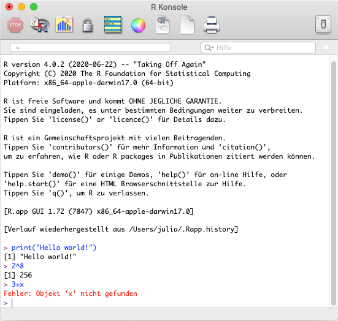
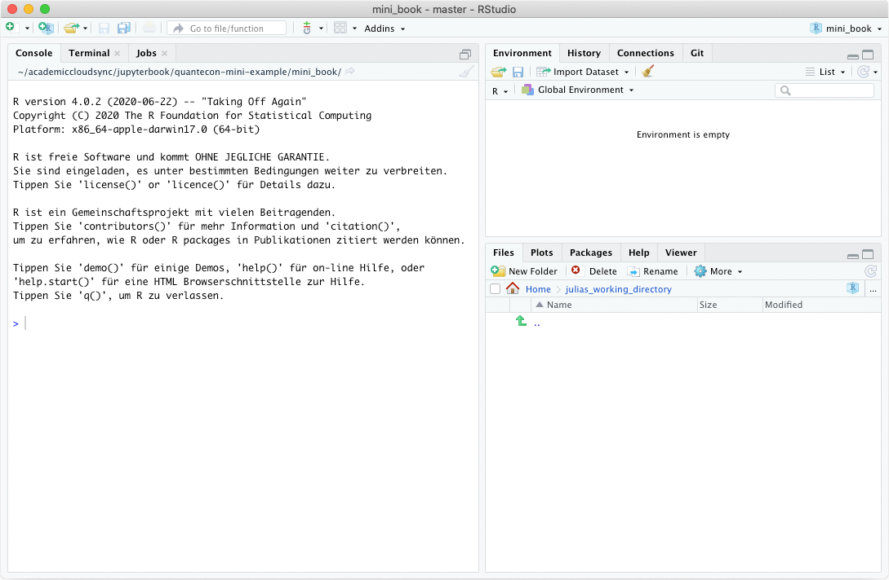
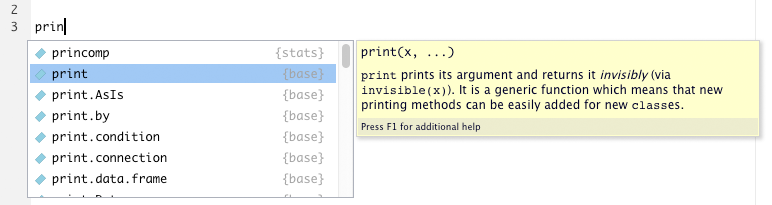
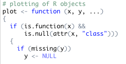

RStudio: Entwicklungsumgebung für R¶
Die R Konsole¶
Wenn man sich R herunterläd und installiert, kann man die Sprache bereits ausführen. Nach einem Doppelklick auf das R-Icon öffnen sich die Konsole. In dem Fenster wird nach dem Öffnen direkt ein längerer in schwarz formatierter Text angezeigt. Er enthält einige Informationen über R, wie z.B. die Versionsnummer, einen Warnhinweis und ein paar grundlegende Befehle.
Unter diesem schwarzem Text folgt ein lila-fabiges “>” hinter dem in blau ein “|” blinkt. Dies bedeutet, das R nun bereit ist für die Eingabe von Befehlen. Nachdem ein Befehl eingegeben wurde kann man ihn mit Drücken der Eingabetaste (Enter) ausführen.
Der folgenden Screenshot zeigt, wie ich drei Befehle eingegeben und ausgeführt habe:
Der Befehl
print()nimmt eine Zeichenfolge und gibt sie in der Konsole aus, in diesem Fall die Zeichenfolge"Hello world!". Dieser als “Hello World-Programm” bezeichnete Befehl ist ein häufig gewähltes erste Programmierbeispiel in der Einführungsliteratur für Programmiersprachen. Fun-Fact: Auch die Tradition des “Hello world!”-Programms stammt ursprünglich aus den Bel Laboratories.Im zweiten Befehl
2^8habe ich R eine Berechnung durchführen lassen, nämlich 2 hoch 8. R liefert nach einem Druck auf Enter das Ergebnis 256 zurück.Im dritten Befehl sollte ebenfalls eine Berechnung durchgeführt werden
3+x. Hier kommt jedoch kein Ergebnis zurück, sondern nur die Fehlermeldung “Objekt ‘x’ nicht gefunden”. R kann die Berechnung nicht durchführen, weil es den Wert für ´x´ nicht kennt. Ich habe es bisher nicht definiert.
Betrachtet man den Screenshot genauer fallen einige Eigenschaften der Formatierung auf:
Der selbstgeschriebene Text wird in blau dargestellt. So ist er leichter von den in schwarz dargestellten Ausgaben zu unterscheiden. Fehlermeldungen erscheinen in rot und sind damit besonders auffällig.
Vor jeder Ausgabe eines Ergebnisses findet sich eine
[1]. Diese markiert, um das wievielte Element einer Ausgabe es sich handelt. Im obigen Beispiel enthält jede Ausgabe nur ein Element, aber Ausgaben können durchaus auch mehrere Teile haben oder sogar ineinander verschachtelte Elemente aufweisen.
Die R Konsole bietet über die Buttons im Menü einige Funktionen und Einstellmöglichkeiten. Z.B. kann man dort die Farben für die Eingabe und die Fehlermeldung anpassen, neue R-Dokumente anlegen, drucken usw. Insgesamt sind die Möglichkeiten aber sehr begrenzt.
Um richtig komfortabel mit R zu arbeiten, bietet es sich an auf eine Integrierte Entwicklungsumgebung (Integrated Development Environment, kurz IDE) zurückzugreifen. So eine IDE kann bspw. bei der Organisation von Dateien unterstützen, bietet Hilfe-Funktionen beim Coden, einen Überblick über die Objekte, die sich im Arbeitsspeicher befinden und vieles mehr. Die bekannteste und beliebteste IDE für R ist RStudio. Wie der Name schon vermuten lässt wurde RStudio speziell für die Arbeit mit R entwickelt. Es ist genau auf die Bedürfnisse von R-AnwenderInnen angepasst.
Im folgenden Abschnitt stelle ich die Entwicklungsumgebung kurz vor, beschreibe einige Features und die Benutzeroberfläche.
RStudio: Die IDE für R¶
Die IDE RStudio ist seit 2011 auf dem Markt und wird von RStudio PBC entwickelt und vertrieben. Das Programm ist sowohl für Desktop-Rechner als auch für Server verfügbar und wird sowohl kostenlos als auch in einer kommerziellen Pro-Version vertrieben. Die Pro-Versionen unterscheiden sich vor allem dadurch, dass den Anwendern ein Priority-Support geboten wird. Seit Beginn 2020 firmiert RStudio als “Public Benefit Corporation” und hat sich damit dem Gemeinwohl verpflichtet.
 Das Unternehmen RStudio ist Teil des R Consotium, eines Zusammenschlusses von Unternehmen, die R in großem Stil einsetzen oder für ihre Geschäftsmodelle nutzen (auch Microosoft, Google und Oracle gehören dazu).
Gerade RStudio treibt sowohl die Verbreitung der Sprache R als auch ihre Weiterentwicklung und Standardisierung enorm voran und prägt damit ihre Ausgestaltung zusehens. Allen voran ist hier das “Tidyverse” zu nennen. Es handelt sich dabei um eine Gruppe von Paketen die von den RStudio-Programmierern um Hadley Wickham (Chief Scientist bei RStudio) entwickelt wurden und die dazu dienen R einheitlicher und verständlicher zu gestalten sowie die Sprache noch besser auf die Bedürfnisse moderner Datenanalyse anzupassen.2
Das Unternehmen RStudio ist Teil des R Consotium, eines Zusammenschlusses von Unternehmen, die R in großem Stil einsetzen oder für ihre Geschäftsmodelle nutzen (auch Microosoft, Google und Oracle gehören dazu).
Gerade RStudio treibt sowohl die Verbreitung der Sprache R als auch ihre Weiterentwicklung und Standardisierung enorm voran und prägt damit ihre Ausgestaltung zusehens. Allen voran ist hier das “Tidyverse” zu nennen. Es handelt sich dabei um eine Gruppe von Paketen die von den RStudio-Programmierern um Hadley Wickham (Chief Scientist bei RStudio) entwickelt wurden und die dazu dienen R einheitlicher und verständlicher zu gestalten sowie die Sprache noch besser auf die Bedürfnisse moderner Datenanalyse anzupassen.2
RStudio-Cloud und Installation¶
Wie oben erwähnt, gibt es sowohl eine Server- als auch eine Desktopversion von RStudio. Für den Zweck der Statistik-Ausbildung arbeiten wir hier am IJK mit einer Serverversion, nämlich der RStudio-Cloud. Dies hat die Vorteile, dass die Studierenden zunächst nichts auf ihren Rechnern installieren müssen und dass die Entwicklungsumgebung mit allen Übungsskripten bereits vorliegt. Sie können sich sehr leicht selbst eine eigene Version der Verwendeten Skripte erstellen und so an den Übungen teilnehmen. Der/die Dozierende kann sich Ihre Versionen ansehen und so bei Fehlern und Fragen leicht helfen.
Obwohl die RStudio-Cloud im Rahmen der Statistikausbildung sehr praktisch sein wird, benötigen Sie (später) eine eigene Instanz von R und RStudio auf Ihrem persönlichen Rechner. Zum einen für den Zweck des Übens, zum anderen weil Sie es später zur Arbeit an eigenen (Studien-)Projekten benötigen werden. Die Anleitung zur Installation befindet sich auf den nächsten Seiten. Sie ist getrennt nach Windows und MacOS aufgeführt, da sich die Schritte die zur Installation nötig sind leicht unterscheiden.
Die Benutzeroberfläche¶
Die Benutzeroberfläche von RStudio gliedert sich in verschiedne Bereiche. Wenn Sie RStudio zum ersten Mal öffnen sieht sie in etwa so aus:
Links finden Sie die bereits bekannte R Console. Hier werden die Ergebnisse von Berechnungen ausgegeben und man kann auch wie oben bereits beschreiben Befehle eingeben. Der linke Bereich enthält neben der Console noch weitere Tabs (“Terminal” und “Jobs”). Diese benötigen wir jedoch nicht.
Der Bereich rechts ist zweigeteilt. Oben findet sich die Environment, zu deutsch Arbeitsumgebung. Hier werden die Objekte angezeigt, die während der aktuellen R-Session erzeugt wurden. Ein Objekt kann dabei alles mögliche sein, z.B. ein Datensatz oder das Ergebnis einer Berechnung. Im Moment ist die Arbeitsumgebung natürlich noch leer. Auch dieser obere rechte Bereich hat mit “History”, “Connections” und “Git” weitere Tabs, die für uns zunächst nicht interessant sind.
Im unteren rechten Bereich finden sich ebenfalls verschiedene Tabs, die wichtigsten werde ich nun kurz erläutern.
Der erste heißt Files. Wenig überraschend findet sich dort ein Dateibrowser, in dem ihr Arbeitsverzeichnis und die sich darin befindlichen Dateien angezegt werden. Mit den Icons im Bereich können Sie durch ihr Filesystem navigieren. Wären in ihrem Arbeitsverzeichnis bereits Dateien abgelegt, könnten Sie diese durch Doppelklick auch direkt in RStudio öffnen.
Im zweiten Tab Plots werden Grafiken, die Sie mit R erzeugt haben angezeigt. Der Tab Viewer dient ebenfalls der Ausgabe von in R erzeugten inhalten.
Im Tab Packages sehen sie die R-Pakete, die auf Ihrem Rechner bereits installiert sind. Über den Button “Install” können Sie CRAN nach weiteren Paketen suchen und diese installieren. Um ein Paket in einer Session benutzen zu können muss es aber nicht nur installiert sein, es muss auch “aktiviert” bzw. geladen werden. Wie das genau geht behandeln wir später noch einmal im Detail. Im Tab Packeges kann man an dem Kästchen vor den einzelnen Paketen sehen, ob ein Paket in der aktuellen Arbeitssession bereits geladen wurde (dann würde hier ein Häkchen angezeigt werden).
Der Tab Help beinhaltet die Hilfe und Anleitungen für die einzelnen Funktionen von R.
Man kan die Hilfe aufrufen indem man ein Suchwort in das Suchfeld ganz links eingibt. Alternativ kann man auch innerhalb des Quelltextes den Cursor auf eine Funktion setzen und dann die Funktionstaste “F1” drücken.
Außerdem kann man die Hilfe einer Funktion auch über den Befehl ?name_der_funktion() aufrufen. Gibt man diesen Befehl ein öffnte sich automatisch der Help-Tab mit dem gesuchten Inhalt.
Hilfreiche Features von RStudio¶
RStudio ist eine umfangreiche IDE, die die AnwenderInnen mit umfangreichen Funktionen unterstützt. Ein paar davon möchte ich an dieser Stelle explizit hervorheben.
Autovervollständigen. Während man in RStudio Text schreibt, macht die IDE Vorschläge, wie sich das bisher geschreibene sinnvoll vervollstädigen lässt. Dieses Feature ist besonders hilfreich, wenn man von einem Befehl nur den Anfang kennt und nicht genau weiß, wie er geschreiben wird und welche Elemente er beinhaltet.
Der Screenshot zeigt, wie nach Tippen der Buchstaben ´prin´ Funktionen angezeigt werden, die mit diesen Buchstaben beginnen. Aus den Vorschlägen kann man mit der Maus oder über die Pfeiltasten und Drücken der Entertaste den richtigen auswählen, ohne dass man den Befehl selbst zu Ende schreiben müsste. Das spart viel Zeit und ist außerdem gerade dann hilfreich, wenn man die BEfehle noch nicht auswendig kennt. Neben dem Autocomplete wird außerdem in gelb ein Hinweis zur Syntax und der Beginn der entsprechenden Hilfe-Datei angezeigt. Zu beachten ist, dass über das Autocomplete nur Funktionen aus Paketen angezeigt werden, weclhe während der aktuellen Session bereits geladen wurden.
Aufrufen der Hilfe-Funktion. Der Tab “Help”, der weiter oben bereits vorgestellt wurde ist bei RStudio direkt in die Entwicklungsumgebung integriert. Dieser Umsand ist erwähnenswert, denn bei anderen IDEs öffnet sich bei Aufruf der Hilfefunktion häufig ein externer Browser. Das die Hilfe bei RStudio direkt integriert ist nimmt zwar etwas Platz auf dem Bildschirm weg, ist jedoch auch sehr anwenderfreundlich, gerade für ProgrammiereinsteigerInnen.
Automatisches Einrückungen. Wenn Codes länger werden und über mehrere Zeilen gehen bietet es sich an, diesen durch Einrückungen übersichtlich zu formatieren. Es kann so leicht kenntlich gemacht werden welche Teile einer längeren Kette von Befehlen unmittelbar zusammengehören. Bei einigen Programmeirsprachen gehören solche Einrückungen sogar unmittelbar zur Syntax dazu (z.B. bei Python). Aber selbst wenn sie nicht unmittelbar Bestandteil einer Sprache sind, sind Einrückungen für die menschliche AnwenderIn nützlich, um den Überblick zu behalten. RStudio schlägt während des Programmierens selbst sinnvolle Einrückungen vor, so dass die AnwenderIn damit meist keine Arbeit hat.
Syntaxhighlighting. Syntaxhighlighting bedeutet, dass unterscheidliche Bestandteile des Codes in unterschiedlichen Farben dargestellt werden. Der folgende Screenshot demonstriert dies:
 Auch Syntaxhighlighting dient der Übersichtlichkeit für die menschlichen Anwenderin. Über das Menü "Tools" > "Global Options" > "Appearance" können Sie unterschiedliche Farbschemata einstellen. Einige davon haben einen dunklen Hintergrund. So ein *Dark Mode* hilft beim Energiesparen und ist veilleicht auch angenehmer für die Augen. Probieren Sie es ruhig aus!Weiterführende Links¶
Literatur¶
- 1
John M. Chambers. Programming with data: A guide to the S language. Springer, New York, NY, 3 edition, 2000. ISBN 0387985034.
- 2
John M. Chambers. S, r, and data science. Proceedings of the ACM on Programming Languages, 4(HOPL):1–17, 2020. doi:10.1145/3386334.
- 3
Norm Matloff. Tidyverseskeptic. 2019. URL: https://github.com/matloff/TidyverseSkeptic.
- 4
Jasper McChesney. A thousand gadgets: my thoughts on the r tidyverse. 2020. URL: https://towardsdatascience.com/a-thousand-gadgets-my-thoughts-on-the-r-tidyverse-2441d8504433.